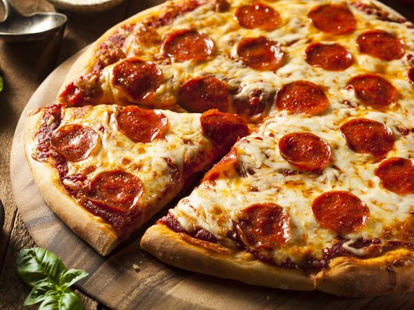
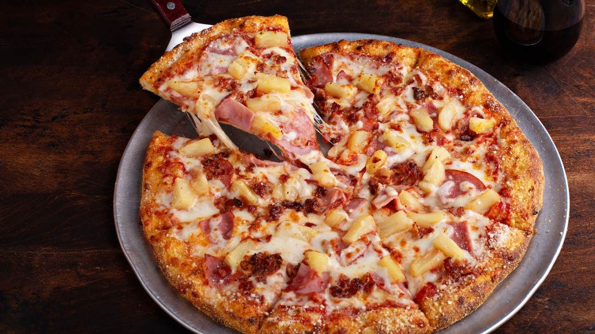

Pepperoni
El clásico infalible de la cocina americana, con nuestro toque de personalidad.
Una base crujiente cubierta de mozzarella derretida, rodajas de pepperoni jugoso y un toque de orégano. Un sabor familiar y delicioso que nunca falla.
Margarita
Cada bocado te hará viajar a Nápoles.
Una base fresca cubierta de salsa de tomate casera, mozzarella fresca de búfala y albahaca aromática.


Capricciosa
Un capricho para los paladares más exigentes.
Mozzarella, jamón cocido de alta calidad, champiñones frescos, alcachofas tiernas y un toque de aceitunas negras para un sabor intenso y sofisticado.
Hawaiana
Atrevida, contra las reglas.
Una combinación exótica de mozzarella, jamón cocido, piña dulce y pimiento verde que te sorprenderá con su frescura y equilibrio.
